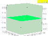

scalar_potential

Definition: In mathematical physics, scalar potential, simply stated, describes the situation where the difference in the potential energies of an object in two different positions depends only on the positions, not upon the path taken by the object in traveling from one position to the other. It is a scalar field in three-space: a directionless value (scalar) that depends only on its location. A familiar example is potential energy due to gravity.
Source: Wikipedia
Wikipedia Page
Wikidata Page